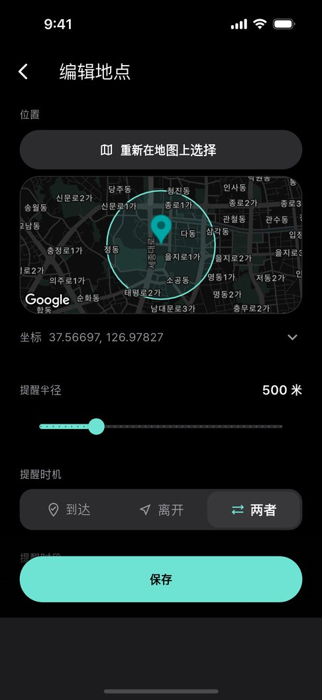
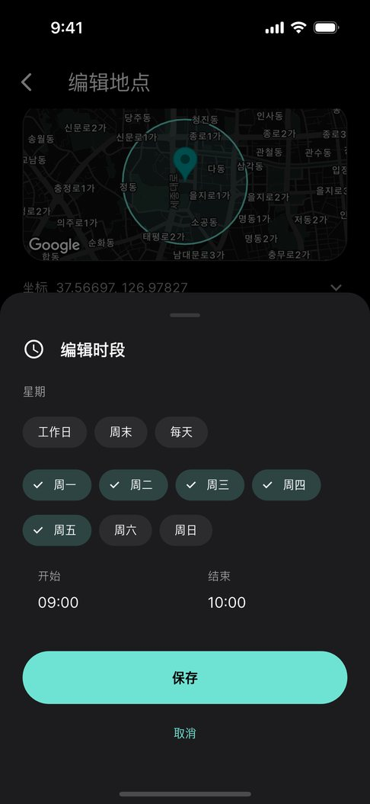
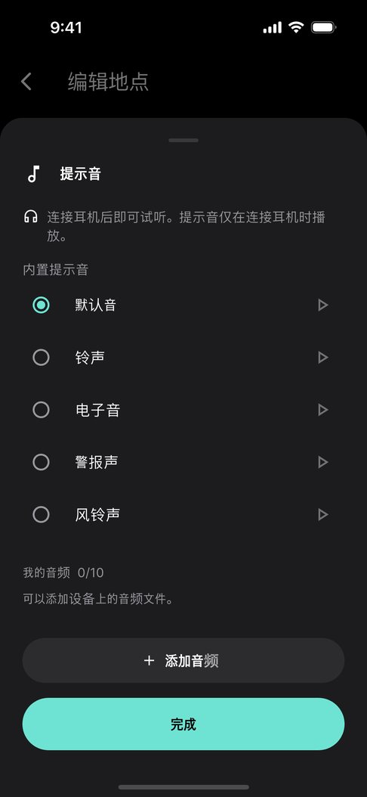
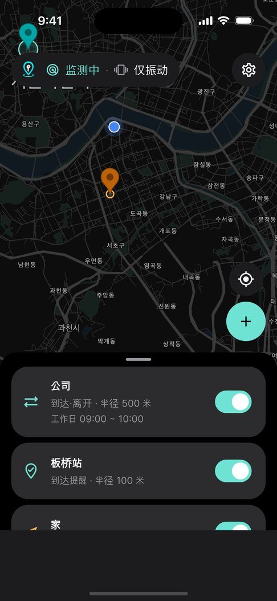

01
在地图上标记，
设定范围就好。
车站、地铁站、公司，哪里都行。看着圆圈在 50 米到 2 公里之间选择。

公交 · 地铁 · 班车到站提醒
到达时振动提醒，戴着耳机时才有声音。
绝不会从扬声器外放的位置提醒。

到达的那一刻
一进入范围就立刻振动。不用一直开着 App，它会在后台帮你盯着。
正在前往板桥站
班车
公司通勤班车、校车大多没有站名，也没有报站，看着窗外一不留神就坐过了。把公司正门、宿舍楼下、机场下车点在地图上标记一次就好。
使用方法
01
车站、地铁站、公司，哪里都行。看着圆圈在 50 米到 2 公里之间选择。

02
每个地点单独设置提醒时机。设定星期和时间段，只在那时提醒。

03
有线、USB-C、蓝牙耳机。确认连接后才发声，否则只振动。

04
在摇晃的公交上，不看屏幕用拇指也能按到。
功能
登记好地点后会在后台帮你盯着。位置信息不会离开你的设备。

弱 · 中 · 强
50 米到 2 公里
按允许列表检查已连接的设备。
设定星期和时间段，只在那时提醒。
常见问题
可以。在地图上登记要下车的车站，进入该范围的那一刻就会振动叫醒你。即使没有打开应用、屏幕关闭也能工作。
不会。只有确认连接了有线、USB-C 或蓝牙耳机后才会发声。没有连接时只振动，绝不会从扬声器外放。
不会一直开启定位。离地点较远时交给系统的地理围栏，只有靠近时才精确确认，以减少耗电。
不会。到站判断全部在手机里完成，登记的地点和记录只保存在设备上，也无需注册账号。
只要在 Galaxy Watch 或 Apple Watch 上设置接收手机通知，到站提醒也会发到手表。应用的设置 › 在手表上接收提醒 中有说明。
免费。应用含有广告，但正在提醒的界面上不会显示广告。